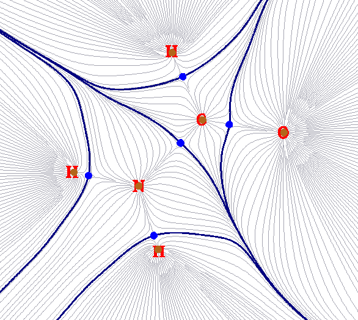
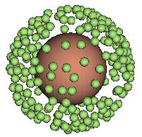
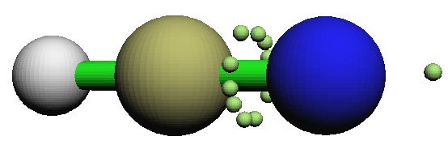
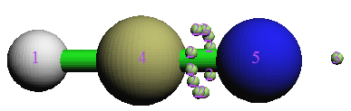
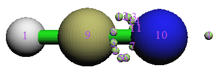
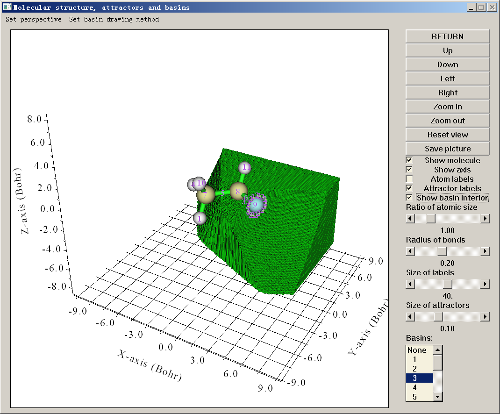

盆分析（Basin analysis）（17）¶
Multiwfn manual, p.247–256.英文原文见同名 English 章节。 Images:
../imgs/.
但轨道相互作用图仍可用。若要在限制开壳层波函数基础上正确做 CDA 以避免显式区分 α 与 β 轨道，应在分析前手动把限制开壳层波函数转为等价的非限制开壳层波函数，例子见 4.16.4 节。
可定义无穷多片段；但若定义了多于两片段，ECDA 分析不可用。
若配合物或任一片段用多组态方法（如 MP2、double-hybrid 泛函）计算，ECDA 分析与轨道相互作用图不可用，因为自然轨道的轨道能量无定义。
CDA 的一些例子见 4.16 节。
3.20 盆分析（Basin analysis）（17）¶
3.20.1 理论（Theory）¶
盆（basin）的概念最早由 Bader 在其分子中的原子（AIM）理论中引入，之后该概念被 Savin 与 Silvi 移植到 ELF 分析。事实上，盆可对任何实空间函数定义，如分子轨道、电子密度差、静电势乃至 Fukui 函数。
实空间函数一般有一个或多个极大值，称为吸引子（attractors）或 (3,-3) 临界点。每个盆为全空间的子空间，唯一包含一个吸引子。盆之间以盆间表面分隔，盆间表面本质上是实空间函数的零通量面；数学上，这种表面由满足 ∇𝑓(𝐫) ∙𝐧(𝐫) = 0 的全部点 {r} 组成，其中 n(r) 表示表面在位置 r 处的单位法矢。
下图示意 NH2COH 总电子密度的盆，这种图常出现在 AIM 分析中。棕色点为吸引子；此时它们对应总电子密度的极大从而很靠近核。蓝色粗线对应盆间表面，它们把全部分子空间切分为盆，此时亦称 AIM 原子空间或 AIM 盆。灰色线为总电子密度的梯度路径，它们从吸引子发出。

Multiwfn 能对任何支持的实空间函数产生盆，如电子密度、ELF、LOL、静电势。另外，可让 Multiwfn 载入第三方程序产生的格点文件（如 cube 文件或 .grd 文件），再对格点数据中记录的实空间函数产生盆。
盆产生后，可做一些基于盆的分析以提取有化学意义的信息。Multiwfn 支持三种最有用的盆分析，简述如下。它们都需在盆中做积分。
(1) 研究盆中某实空间函数的积分。例如，可先用电子密度定义盆，再在盆中积分电子密度以获得盆中的电子布居数；该量称为 AIM 原子布居数。再如，可先按 ELF 函数把空间划分为盆，再算盆中自旋密度的积分。
(2) 研究盆中的电磁多极矩。在 Multiwfn 中可算盆中的电单极、偶极与四极矩。这对深入、定量理解电子在体系不同区域如何分布很有用。基于这些数据，可清楚理解如孤对电子如何贡献分子偶极矩（例子见 J. Comput. Chem., 29, 1440 (2008)，其中用 ELF 盆），另一分子靠近时某原子周围的电子密度如何极化。
(3) 研究盆中的定域指数与离域指数。前者衡量平均定域在某盆中的电子数，后者是两盆间离域（或说共享）电子数的定量度量。它们已在 3.18.5 节很详细地介绍，此处不再重述。相对 3.18.5 唯一的差别是当前考虑的积分范围是盆而非模糊原子空间。
3.20.2 数值方面（Numerical aspects）¶
本节描述盆分析涉及的许多数值方面，以便理解 Multiwfn 的盆分析模块如何工作。
产生盆的算法（Algorithms for generating basins） 产生/积分盆的算法可分为三类：(1) 解析方法。由于 AIM 理论的流行与重要，以及 AIM 盆形状复杂，很久以前就提出了许多方法试图加快 AIM 盆的积分效率、提高积分精度，如 J. Comput. Chem., 21, 1040 (2000) 与 J. Phys. Chem. A, 115, 13169 (2011)。这些方法都是解析的，几乎全部老的或经典的 AIM 程序都用它们，如 AIMPAC、AIM2000、Morphy、AIMAll。这类方法有许多严重缺点：1. 算法很复杂 2. 计算代价高 3. 只适用于总电子密度分析 4. 产生盆前须先用某种方式定位 (3,-3) 与 (3,-1) 临界点。这些方法唯一的优点是积分精度很令人满意。
(2) 基于格点的方法。这类方法依赖立方（或矩形）格点数据。自旨在分析 ELF 盆、首次用基于格点方法的 TopMoD 程序发表后，基于格点的方法不断被提出并受到越来越多
关注。基于格点的方法解决了分析方法中的全部缺点；它们易编码，计算代价相对较低，更重要的是适用于任何实空间函数。不幸的是这些方法并非没有缺点，核心缺点是积分精度高度依赖格点数据的质量；要获得高精度的积分值格点间距须足够小。
(3) 解析与基于格点混合的方法。这类方法唯一的例子见 J. Comput. Chem., 30, 1082 (2009)，其中用 Becke 的多中心积分方案积分盆。该方法比解析方法快，比基于格点的方法准，但只适合分析总电子密度，从而应用范围严重受限。由于 Multiwfn 的盆分析模块注重通用性，目前未实现该方法。
目前最好的基于格点的方法是 near-grid 方法（J. Phys.: Condens. Matter, 21, 084204 (2009)），Multiwfn 用它作产生盆的默认方法。Multiwfn 还支持 on-grid 方法（Comput .Mat. Sci., 36, 354 (2006)），它是 near-grid 方法的前身。
在 Multiwfn 中产生盆与定位吸引子的基本步骤（Basic steps of generating basins and locating attractors in Multiwfn） 在 Multiwfn 中，产生盆与定位吸引子同时进行；基本过程可总结如下：给定格点数据，依次循环全部格点（盒子边界的格点除外）。从每个格点出发，沿最大梯度方向连续演化轨迹。每步移动限制在其近邻格点，用它与其近邻格点的函数值经单向有限差分求每个格点中的梯度。当前轨迹的演化在四种情形下终止再循环下一格点 (a) 轨迹到达某格点，其中全部方向的梯度等于或小于零；这种格点视为吸引子，同时轨迹包含的全部格点归属于该吸引子。(b) 轨迹到达已归属的格点；轨迹包含的全部格点归属于同一吸引子。该处理极大降低了计算开销。(c) 达到步数上限 (d) 轨迹到达盒子边界的格点；轨迹中的全部格点标记为“走到边界”状态。
全部格点循环完后，得到格点数据空间范围覆盖的全部吸引子的位置。归属于同一吸引子的每套格点共同构成该吸引子对应的盆。之后按任一近邻格点属于不同吸引子的判据检测盆间格点。注意有时上述过程完成后，有些格点可能仍未归属，有些格点可能处于“走到边界”状态。这种格点常远离原子从而无足轻重，一般可放心忽略。
on-grid 方法与 near-grid 方法的唯一区别是后者引入了所谓“校正步”来连续校准轨迹的演化方向，这极大消除了 on-grid 方法带来的盆间表面的人为性问题，从而使盆积分更接近真实值。near-grid 方法在最后阶段可辅以盆间表面的精修步，从而盆的划分更准确，该额外步骤不太耗时。
对 ELF（可能还有其它实空间函数），若体系中存在球形或环形吸引子，在相应区域将找到大量取值基本相同的吸引子。
下两例示意环绕 HCN 中 N-C 键的环形 ELF 吸引子与包围 Ar 原子的球形 ELF 吸引子的存在。
基于最近邻算法，Multiwfn 自动检查全部定位吸引子对之间的距离与相对取值差，再把一些吸引子聚在一起。所得吸引子从而有多个成员吸引子，下称“简并吸引子”（degenerate attractors）。例如，下左图与右图分别显示聚类前后的吸引子序号。可见，聚类后构成环形 ELF 吸引子的全部吸引子序号相同，表明相应的盆已合并为盆 #2。
对某些情形，在远离体系的区域定位到一些人为或物理无意义的吸引子。这些吸引子函数值很低从而称为“不重要”吸引子；相比之下其它吸引子可称为“重要”吸引子。出现不重要吸引子是因为相应区域函数值很小，从而函数行为不太明确，即使函数值的很小涨落或微不足道的数值扰动也足以产生新吸引子。检测到不重要吸引子后，Multiwfn 将提示选择如何处理，有三个选项：(1) 什么都不做，即不删除这些吸引子 (2) 删除这些吸引子同时把相应格点设为未归属格点 (3) 删除这些吸引子同时把相应格点归属于最近的重要吸引子。一般推荐第三个选项。
若实空间函数同时有正部与负部，如静电势，Multiwfn 将自动把格点数据的负部变号再照常定位吸引子并产生盆，之后再变回来。因此，对负部，Multiwfn 定位的“吸引子”实际为“排斥子”。
若发现格点数据处处非负，而你想定位其极小（排斥子）而非极大（吸引子），可在盆分析模块的选项“-1 选择产生盆的方法（-1 Select the method for generating basins）”中选相应子选项以切换定位对象，或把 settings.ini 中的 "ibasinlocmin" 参数设为 1。之后报告的吸引子对应排斥子。该功能可用于定位 RDG 与 IRI 的极小，它们在揭示相互作用上有独特价值。
盆的积分（Integration of basins） 一旦用基于格点的方法产生盆，盆 P 中实空间函数




f 的积分可很容易求为 𝐹= ∑𝑓(𝐫𝒊) × d𝑉𝑖∈𝑃，其中 i 为格点序号，dV 为体积微元。显然，用的格点数据越细（格点间距越小）积分值越准，相应地须付出更多计算努力。
由于格点的排布一般与体系对称性不一致，除非用很细的格点，不应指望积分值总很好满足体系对称性。
注意不同函数对格点数据的质量要求不同。同样格点间距下，函数变化越快积分精度越低。由于电子密度的 Laplacian、source 函数、动能密度函数等在核附近剧烈波动，仅用基于格点的方法（只用均匀格点，不能很好表示核区）不可能以满意精度直接在 AIM 盆中积分这些函数。为克服该困难，笔者提出了基于原子中心与均匀混合格点的积分方法并得到 Multiwfn 支持，其中靠近核的区域用原子中心格点积分，其它区域用均匀格点积分。该方法能以一般可接受的精度积分 AIM 盆中的任何实空间函数，包括在核附近行为复杂的那些，而相对基于格点的方法没有明显的额外计算代价。为进一步提高 AIM 盆的积分精度，Multiwfn 还允许对盆边界的格点归属做精确精修。从每个边界格点发出精确的最速上升轨迹，到达吸引子时终止。由于边界格点数常很大，且每步最速上升都需算一次电子密度梯度，该过程耗时。在 Multiwfn 中这些梯度也可用基于预先算的梯度格点数据的三线性插值近似求得，可节省 AIM 盆积分总时间开销的 1/3~1/2。注意若用原子中心与均匀混合格点，尤其同时开启边界盆的精确精修过程时，对格点质量的要求显著降低，通常在“中等质量格点”（格点间距 = 0.1 Bohr）级别就可获得准确结果。
值得注意的是，虽然 Multiwfn 的盆分析模块可用于获得吸引子的位置，但精度直接受格点数据质量限制，因为吸引子定位在格点上。而且，该模块不能用于搜索其它类型的临界点（吸引子对应 (3,-3) 型临界点）；因此，若要获得全部类型临界点的准确坐标与值，应用主功能 2，即拓扑分析功能。
3.20.3 用法（Usage）¶
Multiwfn 的盆分析模块很强大、快速、灵活。对任何实空间函数都可产生并可视化盆，同时可在产生的盆中积分任何实空间函数。可算盆中的电磁多极矩以及盆的定域指数与盆间的离域指数。
基本步骤（Basic steps） 在 Multiwfn 中做盆分析，有五个基本步骤 (1) 把输入文件载入 Multiwfn 再进入主功能 17。
(2) 选选项 1 产生盆并定位吸引子。在此之前，可经选项 -1 更换产生盆的方法，或经选项 -6 调节聚类吸引子的参数。
(3) 用选项 0 可视化吸引子与盆。该步可选。(4) 做你想要的分析。产生的盆中实空间函数的积分、盆中的电磁多极矩、盆的定域/离域指数可分别用选项 2（或 7）、3（或 8）、4 算得。
产生的盆可用选项 -5 导出为 cube 文件，吸引子可用选项 -4 导出为 .pdb 文件，定位吸引子的坐标可用选项 -3 查看，吸引子或原子间的距离、夹角、二面角可用选项 -2 测量。也可用选项 -6 的子选项 3 手动把指定的盆合并为一个。若要对其它实空间函数或在新设置下重产生盆并定位吸引子，可再选选项 1。
关于输入文件与格点数据（About input file and grid data） 产生盆前须先获得格点数据。在盆分析模块的选项 1 中，可让 Multiwfn 算格点数据。但若内存中已有格点数据，可直接选使用它。两种情形内存中有格点数据：(1) 输入文件含格点数据，如 .cub 与 .grd 文件 (2) 进入主功能 17 前已用主功能 5 或 13 算过格点数据。该设计使 Multiwfn 相当灵活：可用 Multiwfn 对 .cub 或 .grd 文件中记录的实空间函数产生盆，该文件可由第三方程序输出；也可先用主功能 5 或 17 对电子密度差、Fukui 函数、dual descriptor 等产生格点数据，再对它们产生盆。
在盆积分功能，即选项 2 中，每个格点处的被积函数值须已知才能求积分。这些值可来自三种途径，可任选其一：(1) 让 Multiwfn 直接算 (2) 载入如 .cub 文件中的格点数据，注意该操作不覆盖内存中已存的格点数据 (3) 用内存中已存的格点数据。注意内存中存的格点数据或格点数据文件中记录的格点数据的格点设置须与用于产生盆的格点数据的格点设置完全重合，否则积分无意义。
注意若已让 Multiwfn 对某实空间函数算过格点数据，则该格点数据存于内存从而在盆积分步骤可直接用。
可视化（Visualization） 在选项 0 中，可视化吸引子与盆，例如
多数按钮都是自明的，请随意使用。在右下盆列表中选相应序号可绘制某盆。默认只显示盆边界的格点。若要绘制整个盆区，应勾选 "Show basin interior"
复选框。若只想可视化 ρ = 0.001 a.u. 等值面（vdW 表面的常用定义）包围的盆区，应选 "Set basin drawing method" - "rho>0.001 region only"。
盆列表末尾的 "Unas" 项指产生盆中的未归属格点，而 "Boun" 项对应走到盒子边界的格点，可选它们以绘制相应格点。有些盆很小且很靠近核，如 ELF 的 core 型盆，常被分子结构遮挡；若要查看这些盆，应取消 "Show molecule" 复选框。
浅绿小球表示吸引子，相应的盆着绿色。若实空间函数同时有正部与负部，负区中的“吸引子”（实际为排斥子）显示为浅蓝小球，相应的盆绘为蓝色。
若一套吸引子已聚为一个，虽然 GUI 中显示全部，但其上方显示的序号标签相同，为相应简并吸引子的序号。
用选项 1 定位吸引子后，若用主功能 5 或 13 的 GUI 可视化等值面，也可看到吸引子及其标签。该设计方便了吸引子与等值面的对比研究。

各选项的细节（Details of various options） 盆分析模块涉及的全部选项如下所述；一些选项上文已部分讨论。
- -6 该选项控制吸引子聚类用的参数：若子选项 1 与 2 中的参数分别设为 A 与 B，即对任两个吸引子，若二者间的相对取值差小于 A，同时其间距小于 B*sqrt(dx2+dy2+dz2)，其中 dx、dy、dz 为 X、Y、Z 的格点间距，则它们聚在一起。若要在产生盆后取消自动聚类步，只需把子选项 2 中的参数设为 0。
产生盆后，也可用子选项 3 手动聚类指定的吸引子。
-
-45 导出吸引子信息与当前格点数据的 cube 文件（-45 Export attractor information and cube file of present grid data）：该选项在吸引子与盆已产生时可用。用该选项可把吸引子与盆信息导出为当前文件夹的 basinana.txt，把当前格点数据导出为当前文件夹的 basinana.cub。下次做同样的盆分析时，在选选项 1 试图产生盆后，若在当前文件夹发现这两个文件，Multiwfn 会问是否直接载入；若选 y，吸引子与盆信息以及格点数据将被载入，从而完全避免重产生的开销。
-
-5 把盆导出为 cube 文件（-5 Export basins as cube file）：若输入盆的序号，所选盆将输出到当前文件夹的 basinXXXX.cub 文件，其中 XXXX 为盆的序号。用该选项，可用 VMD 等其它可视化软件以等值 0.5 的等值面图渲染盆，更多细节见 4.17 节一些例子中的相应描述与图示。
在该选项中也可输入 a，则全部盆集体导出到当前文件夹的 basin.cub，其中格点值对应格点所属盆的序号。
该选项中有特殊模式，输入 b 进入，主要用于在 VMD 中绘制 ELF 或 LOL 的盆型着色等值面图，说明见 4.17.10 节。
在该选项中也可输入 c 再输入盆序号，则特定盆区内函数值的格点数据将导出到当前文件夹的 basinsel.cub，用它可只对所选盆可视化等值面。用该选项的例子见 4.17.10 节。
- -4 把吸引子导出为 pdb/pqr/txt/gjf 文件（-4 Export attractors as pdb/pqr/txt/gjf file）：用该选项，可把全部找到的吸引子导出为以下文件之一：
attractors.pdb：该文件中，原子序号对应聚类前的吸引子序号，而残基序号对应聚类后的吸引子序号。
attractors.pqr：与 pdb 相同，但该文件的 "charge" 列对应吸引子处的函数值
attractors.txt：每行含某吸引子的 X、Y、Z 坐标（单位 Bohr）与函数值 attractors.gjf：Gaussian 输入文件，真实原子定义为高层，吸引子记为中层的鬼原子（Bq）。可载入 GaussView 以方便可视化吸引子。为使吸引子的图形效果满意，建议选 "File"-"Preference"-"Display Format"-"Molecule"，把低层设为 "Tube"。还建议关闭原子标签显示。
- -3 显示吸引子的信息（-3 Show information of attractors）：全部吸引子的坐标与值将输出
在屏幕。对简并吸引子，显示的坐标与值为其成员吸引子的平均，全部成员吸引子的坐标与值也分别显示在屏幕。该选项还问是否在按值从最负到最正排序后打印吸引子信息。
-
-2 测量吸引子或原子间的距离、夹角、二面角（-2 Measure distances, angles and dihedral angles between attractors or atoms）：顾名思义。请按屏幕提示操作。
-
-1 选择产生盆的方法（-1 Select the method for generating basins）：在该选项中，可选择定位哪种极值（极小或极大），也可选择划分盆的算法，支持三种算法：(1) On-grid 方法 (2) near-grid 方法 (3) 带边界精修步的 near-grid 方法。注意 Multiwfn 中的 near-grid 方法经笔者改进，从而更稳健。一般推荐 (3)，它也是默认的。
-
0 可视化吸引子与盆（0 Visualize attractors and basins）：该选项上文已介绍。
-
1 产生盆并定位吸引子（1 Generate basins and locate attractors）：选实空间函数，再选格点设置，Multiwfn 将算格点数据，再产生盆同时定位吸引子。之后，如前所述，若有些吸引子取值相近且位置靠近则自动聚类。若内存中已存一套格点数据，可直接选使用该格点数据以避免算新格点数据。该选项可反复用于重产生盆。
Multiwfn 提供了很多定义格点设置的方式。若要研究整个体系的盆，一般“中等质量格点”推荐用于定性分析目的；而要获得更高的积分精度，一般推荐“高质量格点”。若只需研究整个体系局域区域的盆，可使格点数据的空间范围只覆盖该区域；为此建议用选项 "Input center coordinate, grid spacing and box length"，用它可方便地定义格点数据的空间范围。
- 2 在盆中积分实空间函数（2 Integrate real space functions in the basins）：选实空间函数，或选内存中存的格点数据，或选外部 .cub/.grd 文件，则所选实空间函数或格点数据中记录的实空间函数将在选项 1 已产生的盆中积分，输出每个盆中的积分与盆体积。若有些未归属格点或走到盒子边界的格点，其积分也一并显示。
若分析的盆为 AIM 盆，强烈建议改用选项 7 以获得好得多的积分精度。
- 3 算盆中的电偶极与多极矩以及
（3 Calculate electric dipole and multipole moments as well as for basins）：请参考 3.18.3 节。相对 3.18.3 的差别是积分的空间范围限于各自的盆而非模糊原子空间，核位置换为吸引子位置。多极矩输出到四极，八极及以上不算，因为基于格点积分它们难算准。
若研究的盆为 AIM 盆，强烈建议改用选项 8 以获得好得多的积分精度。
- 4 算盆的定域指数（LI）与离域指数（DI）（4 Calculate localization index (LI) and delocalization index (DI) for basins）：请参考 3.18.5 节。相对 3.18.5 唯一的差别是当前考虑的积分范围是盆而非模糊原子空间。
来定义盆，即盆为 AIM 盆，Multiwfn 将要求选择用于求 BOM 的积分格点类型，一般应选混合格点因为其结果好于均匀格点，尤其对涉及 core MO 的 BOM 矩阵元因为它们在核周围剧烈变化。
- 5 算并把全部盆中的轨道重叠矩阵（亦称盆重叠矩阵，BOM）输出到当前文件夹的 BOM.txt（5 Calculate and output orbital overlap matrix in all basins (also known as basin overlap matrix, BOM) to BOM.txt in current folder）：盆 K 的 BOM 的 (i,j) 元定义为
分子轨道 i。全部虚轨道不考虑。
选项 6~9 只在用于定义盆的实空间函数为电子密度时在菜单中可见
-
6 算并把全部原子中的轨道重叠矩阵（亦称原子重叠矩阵，AOM）输出到当前文件夹的 AOM.txt（6 Calculate and output orbital overlap matrix in all atoms (also known as atomic overlap matrix, AOM) to AOM.txt in current folder）：定义与 BOM 相同，唯一区别是用原子序号而非盆序号。注意对应非核吸引子的盆不输出。
-
7 用混合格点在 AIM 盆中积分实空间函数（7 Integrate real space functions in AIM basins with mixed type of grids）：该选项专用于积分 AIM 盆；有三种不同的实现方式：
提示：精度：(2)≥(3)>>(1)。耗时：(2)>(3)>>(1)。内存需求：(3)>(2)=(1)
(1) 用原子中心 + 均匀格点积分特定函数：原子中心格点主要用于积分核附近的实空间函数，均匀格点主要用于其它区域。精度远好于只用均匀格点（即盆分析模块的选项 2）。
(2) 与 (1) 相同，但带边界盆的精确精修：相对选项 (2)，积分盆边界的格点时，这些格点的归属将用最速上升方案精确精修，从而结果比用选项 (1) 更准，不幸的是精修步耗时。
(3) 与 (2) 相同，但带边界盆的近似精修：这是选项 (2) 的近似版。精修步用的电子密度梯度不精确求，而由预先算的梯度格点数据的三线性插值获得。虽然算梯度的格点数据也耗时，但总时间开销低于选项 (2)，精度损失微不足道。
用选项 (2) 或 (3) 一次后，边界格点的归属将被永久更新，即之后若用选项 (1)，结果与 (2) 或 (3) 相同。
积分一并输出的同时还输出盆体积，电子密度 > 0.001 的盆体积也一并输出，可视为原子尺寸。
- 8 用混合格点算 AIM 盆中的电偶极与多极矩（8 Calculate electric dipole and multipole moments in AIM basins with mixed type of grids）：类似选项 3，但用原子中心与均匀混合格点算电磁多极矩以在不带来明显额外计算代价下获得更好精度。该选项只适用于 AIM 盆。
算完后，将被要求选择是否也把结果写入 multipole.txt。若选 y，当前文件夹还产生名为 atom_moment.txt 的文件。基于该文件，经特定脚本可在 VMD 中可视化原子电偶极与四极矩，细节见 4.15.5 节。
用选项 7 和 8 时，若某原子用了有效核势（ECP）同时你未允许 Multiwfn 补充 EDF 信息（见 settings.ini 中的 "isupplyEDF" 参数），则该原子的价区出现很多吸引子；从而进入选项 7 和 8 前，须用选项 -6 的子选项 3 手动把这些吸引子聚为一个。
- 9 获得外部盆布居的原子贡献（9 Obtain atomic contribution to population of external basins）：外部盆指